14 контрактов цепочкой
Закрытые карточки размыты, но уже показывают будущий доход. Условия, партнёры, задания и ROI — внутри карточки.
pepememe.io/contracts
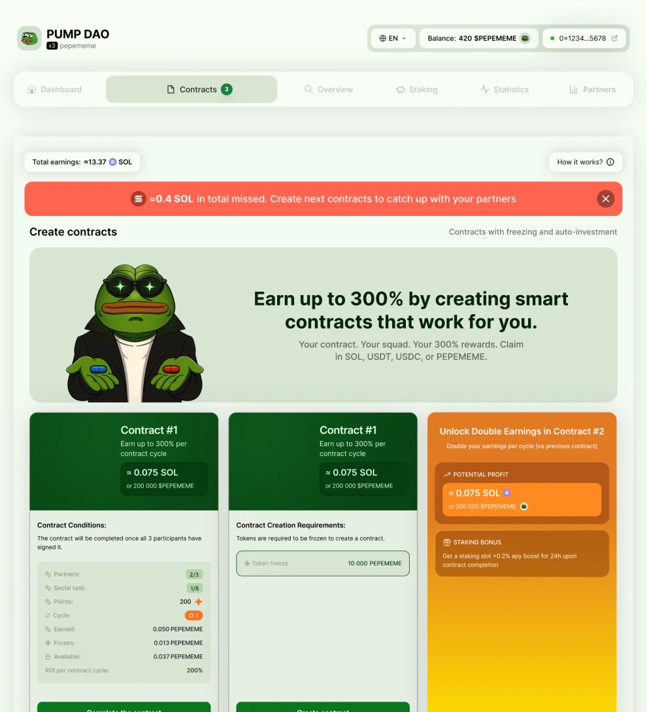
После пресейла мем-токены обычно сливают в первую неделю. За месяц я спроектировал механику удержания и весь продукт вокруг неё: лендинг, кабинет, мобильную версию и иллюстрации. Курс не обвалился, проект сохранил около $2 млн капитализации.
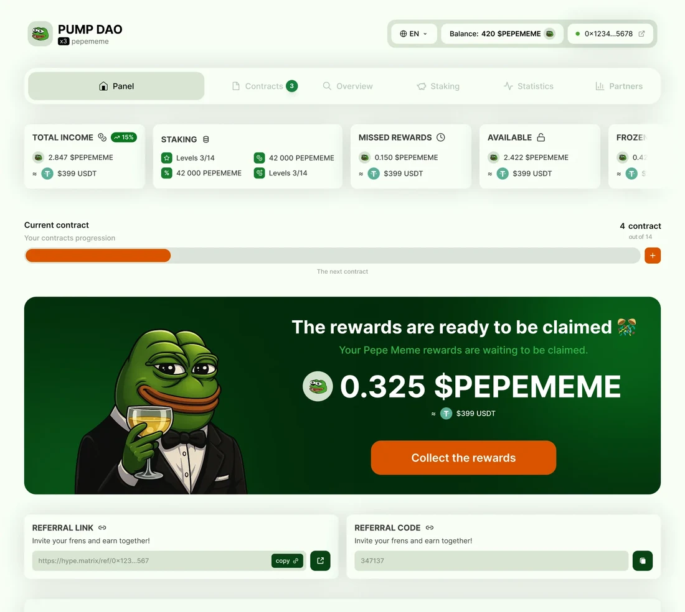
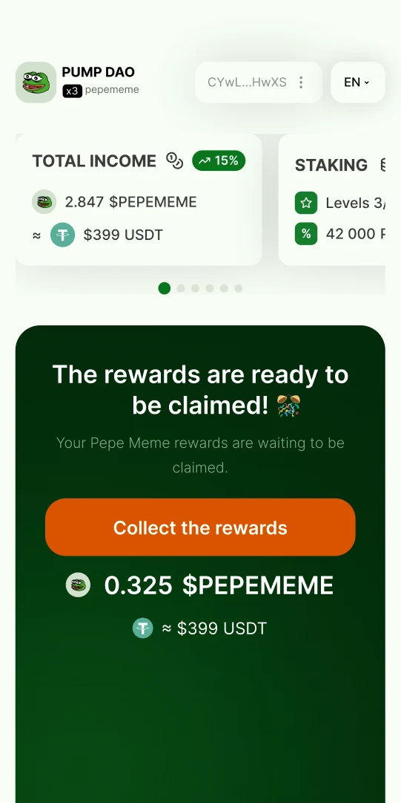
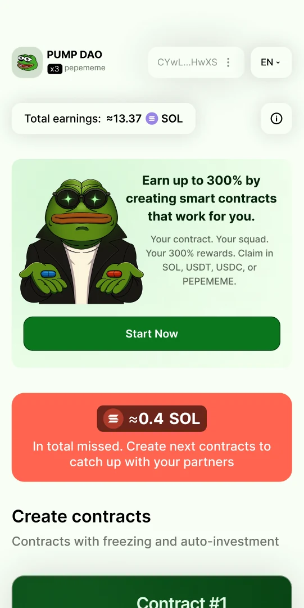
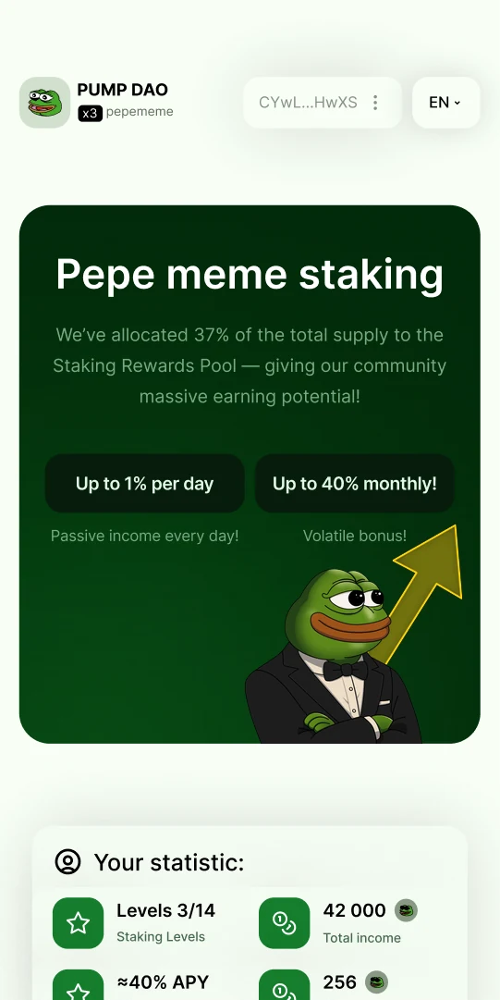
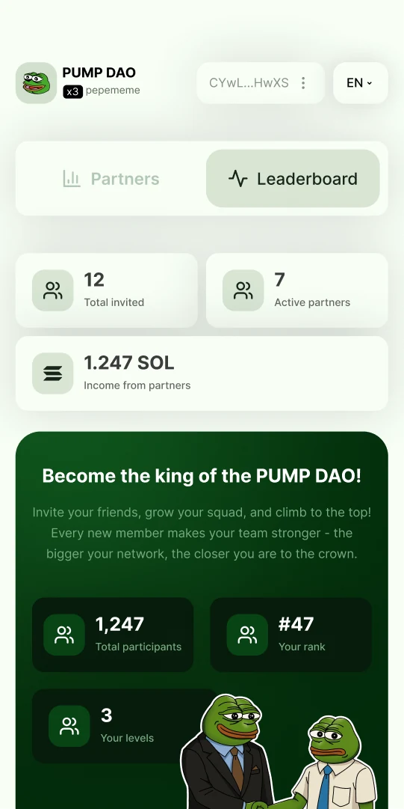
59,6% участников пресейла PUMP продали или вывели токены за первую неделю. У крупнейших пресейлов Solana курс падал на 99% в первые часы.
Жёсткая блокировка не помогает: она отпугивает людей ещё до покупки. Нужно было не запрещать продажу, а сделать её невыгодной.
Данные: BitMEX через ForkLog (2025), ZachXBT через Cointelegraph (2024), Chainalysis (2025)
Главное решение кейса — петля удержания. Держатель никогда не заперт: вывести можно в любой момент. Но каждый круг петли делает следующий выгоднее, и это видно в цифрах прямо на карточке.
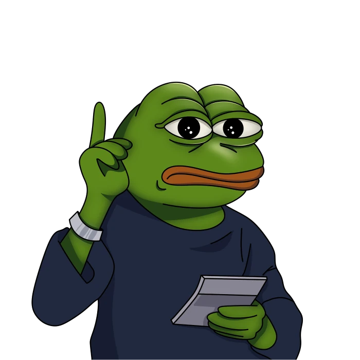
Каждый restake поднимает держателя на уровень выше и добавляет +5% к доходности. Если вывести токены, лестница начинается заново. К четвёртому циклу та же неделя приносит почти вдвое больше: ≈384 → ≈671 PEPEMEME.
Уровень стейкинга живёт в одной карточке. На любом этапе держатель видит, что происходит и что сделать дальше — без отдельных страниц и инструкций.
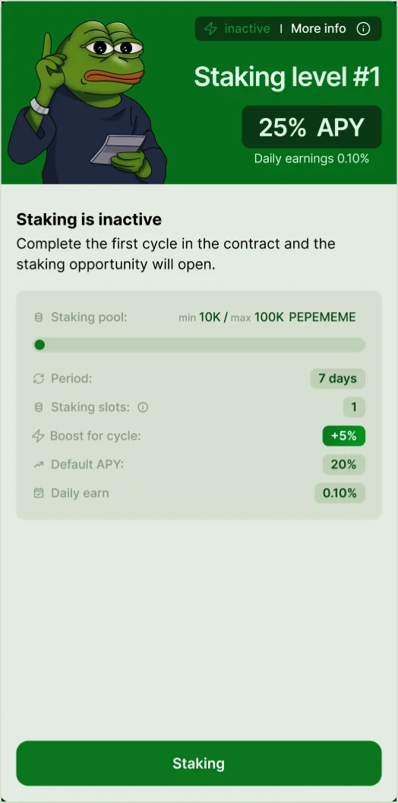
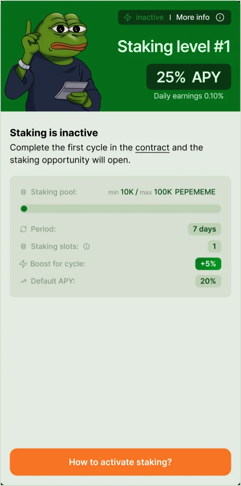
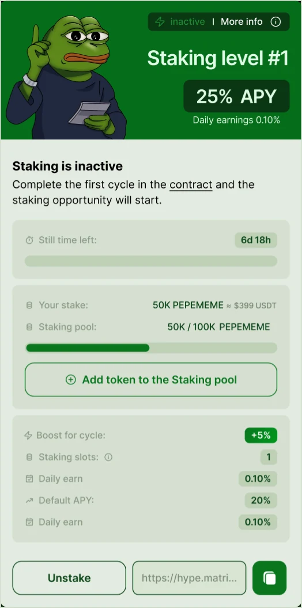
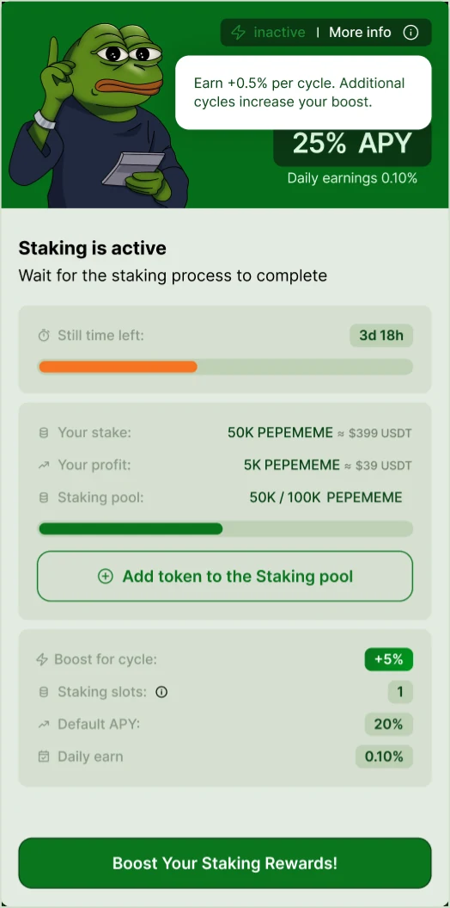
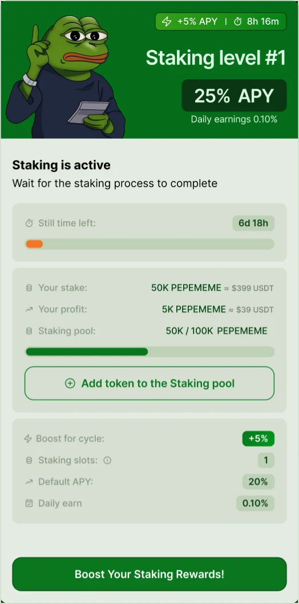
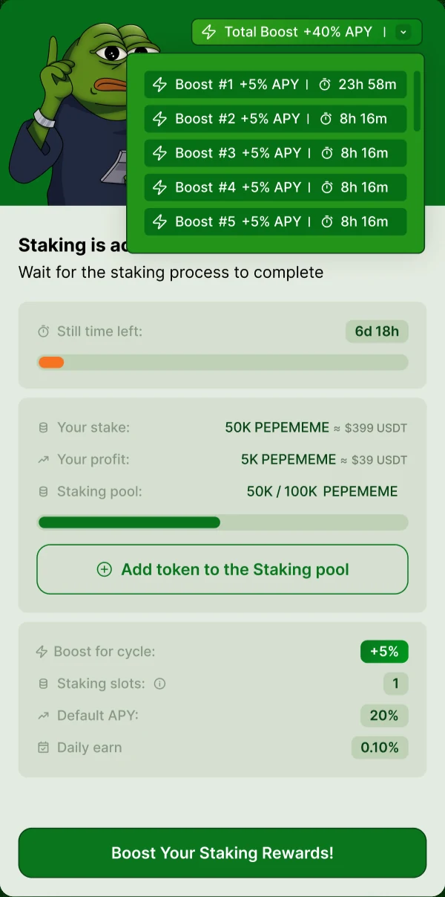
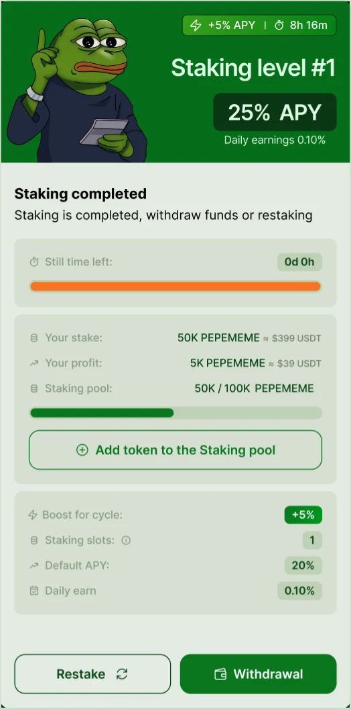
56 мобильных экранов: матрица, бусты и restake работают так же, как на десктопе, а модалки превращаются в нижние листы — без потери ни одного состояния.
Новичок приходит с разным балансом. Старт разделён на три ветки, и все они заканчиваются одним экраном успеха.
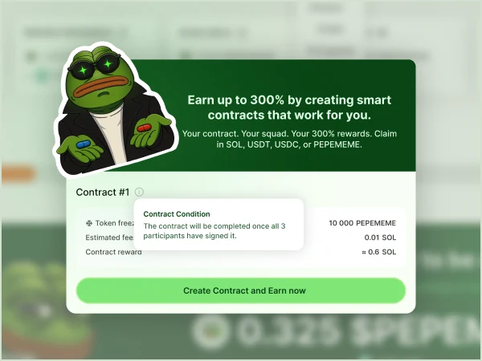
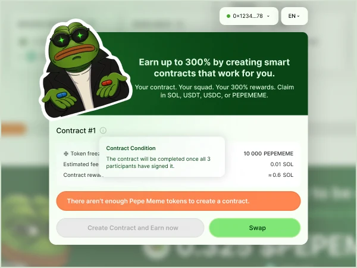
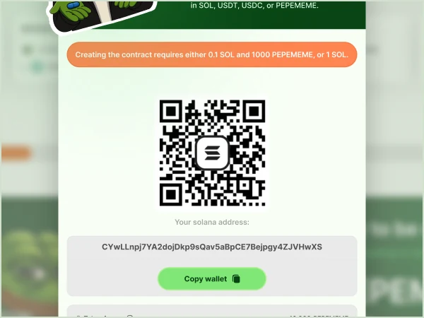
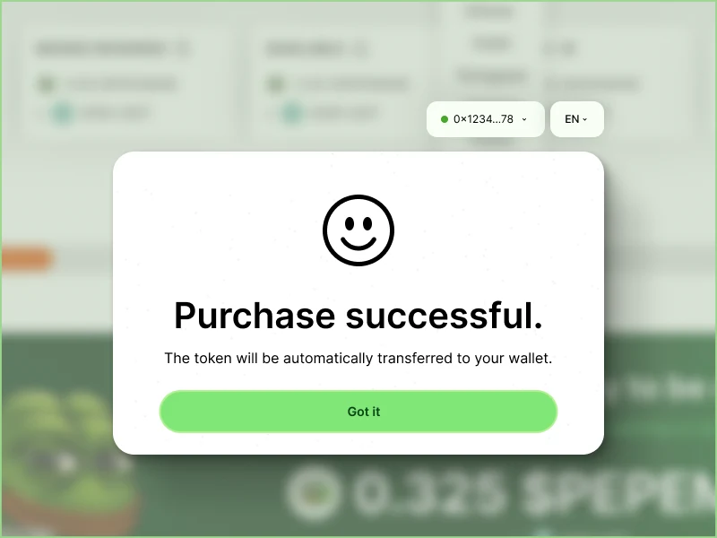
Закрытые карточки размыты, но уже показывают будущий доход. Условия, партнёры, задания и ROI — внутри карточки.

Старый сайт вёл только к кнопке Buy. Новый объясняет, что делать с токеном после покупки.
Всё, что есть на десктопе. Модалки превращаются в нижние листы.
Комьюнити мем-токена не читает правила — оно узнаёт мемы. Я взял четыре мема, которые все знают, и перерисовал их под механику: картинка сама объясняет, что происходит на экране.
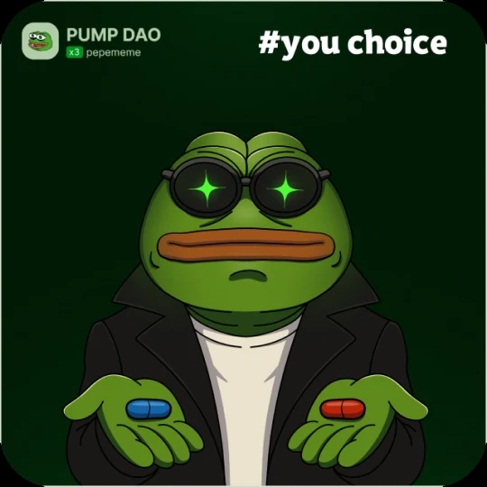
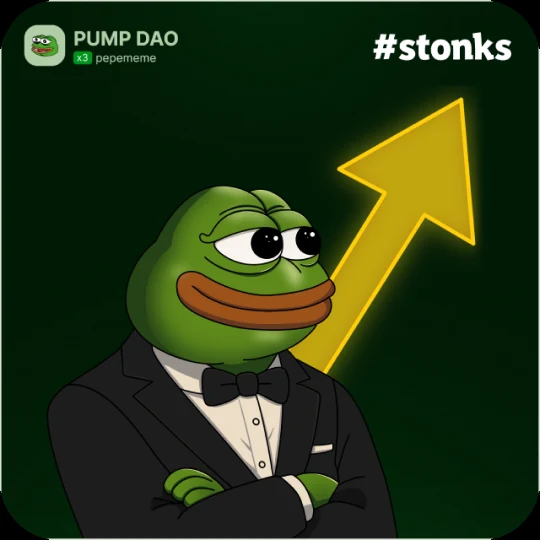
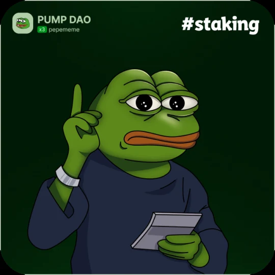
Через месяц после пресейла я сравнил поведение держателей с тем, что обычно происходит на рынке.
За этот месяц один дизайнер передал в разработку
Начинать с бизнес-риска, а не с экранов. Удержание перестало быть блокировкой и стало причиной остаться — и это решение сделала механика в паре с мемным визуалом.
Заложил бы события аналитики на каждый шаг матрицы с первого дня, чтобы видеть, на каком уровне держатели уходят.